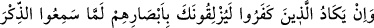
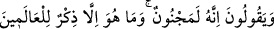
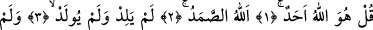
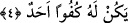
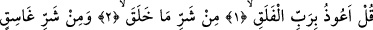

Mahluk olan bütün kelamlarda mutlaka eksiklik vardır. “Tam”lıkla tavsif edilen bir
kelam mahluk değildir ve Allah Teâlâ’nın kelamıdır.”
Fakir (Bursevî) der ki: Hz. Ali (r.a.)’ın şu sözünde mahluka istiâzede bulunulduğu
görülür: “Yırtıcı hayvanların saldıracağından korktuğunuz bir vadide bulunduğunuz
zaman; ‘Aslanların şerrinden Danyal’a ve kuyuya sığınırım.’ deyin.”
Bu ifade şöyle açıklanabilir: “En iyi koruyan Allah’tır ve O merhametlilerin
merhametlisidir.” (Yûsuf, 12/64) âyetinin tefsîrinde zikrettiğimiz üzere Danyal (a.s.)
(kuyuya atılıp üzerine iki aslan bırakılmak sûretiyle) yırtıcı hayvanlarla yüz yüze
gelmişti. İşte Allah onun bu konuda kendisine sığınmasını, karşı konamayacak bir
kötülüğün ulaşmasına mâni kılmıştır. Hayâtü’l-hayevân’da böyle geçmektedir.
Bâzıları der ki: Bu, içlerinde Allah’tan başkasına karşı hâlâ bir iltifat kalanların
makamıdır. Varlıkta Allah’tan başkasını görmeyecek şekilde tevhid denizinde gark
olanlara gelince, onlar Allah’tan başkasına sığınmazlar, Allah’tan başkasına ilticâ edip
sığınmazlar. Nebî (a.s.) bu makamdan terakkî edince “Sen’den sana sığınırım.”[69]
buyurmuştur.
el-Fütûhâtü’l-Mekkiyye’de şöyle der: “Harflerden ve Cenab-ı Hakk’ın isimlerinden
hâsıl olan tesir bir cins keramettir.” Yani, kerâmet yoluyla onların özelliklerini ortaya
çıkarmak türündendir. Çünkü herkes eşyanın husûsiyetlerini ortaya çıkaramaz.
Hasan Basrî’den rivâyet edildiğine göre nazar değmesinin devası
“O inkar edenler zikri (Kur’ân’ı) işittikleri zaman neredeyse gözleriyle seni
devirivereceklerdir. Hâlâ da: “Hiç şüphe yok o bir delidir” derler. Oysa o (Kur’ân)
âlemler için ancak bir öğüttür.” (el-Kalem, 68/51-52) âyetlerinin okunmasıdır. Nazar
değmesini savuşturmak için bu âyetten daha faydalı bir şey yoktur.
Hz. Âişe (r.anhâ)’dan rivâyet edildiğine göre “Rasûl-i Ekrem (s.a.) her gece yatağına
yattığı zaman avuçlarını birleştirerek onlara İhlas sûresi;
“De ki: O, Allah birdir. Allah sameddir. O, doğurmamış ve doğmamıştır. Onun
hiçbir dengi yoktur.” (el-İhlâs, 112/1-4)
Muavvizeteyn sûrelerini; Kul eûzü bi-rabbi’l-felak;